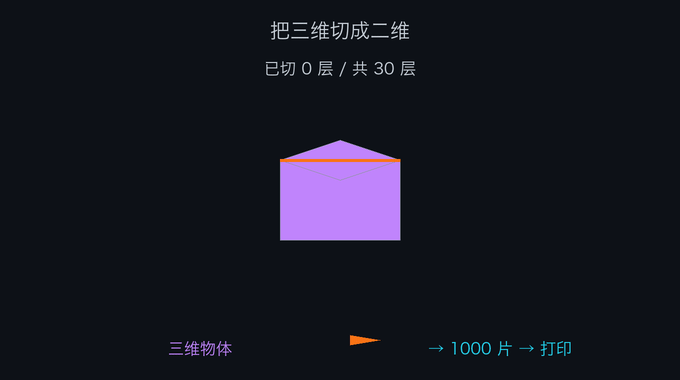
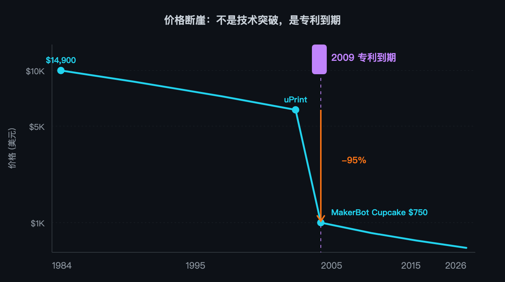
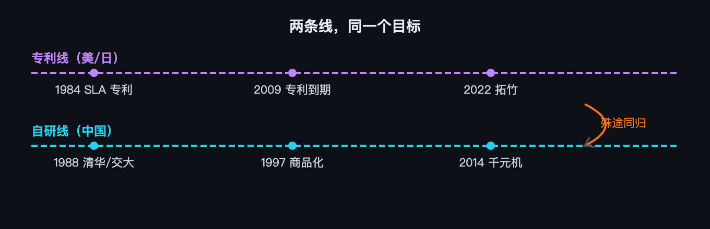
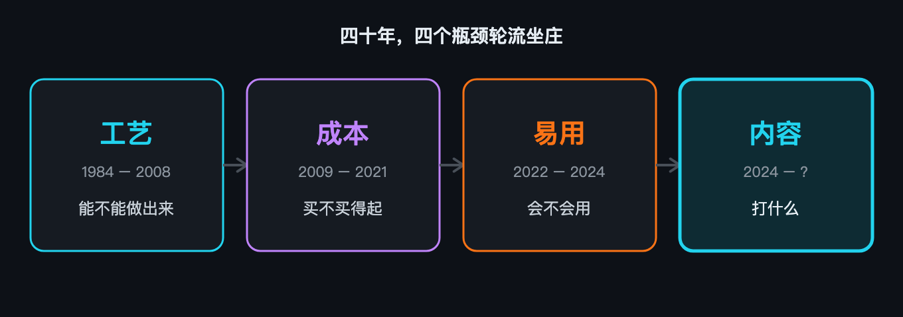
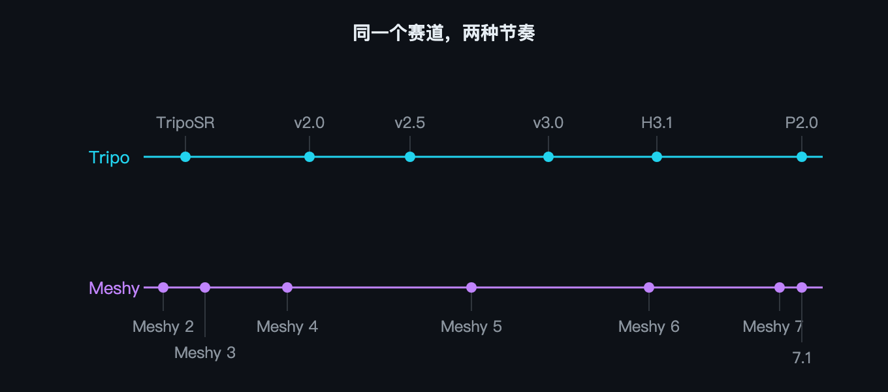
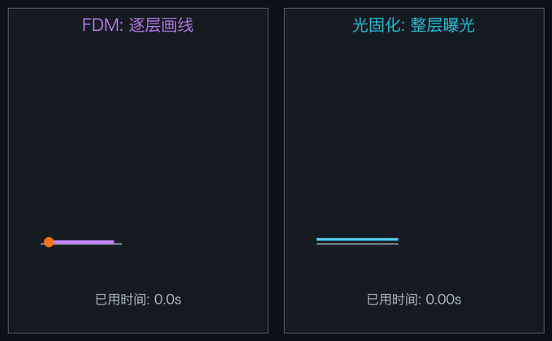
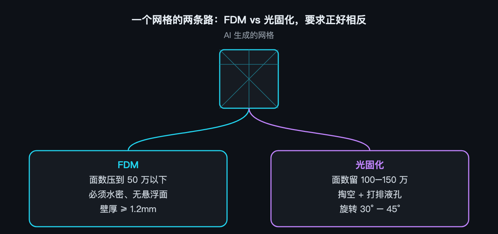
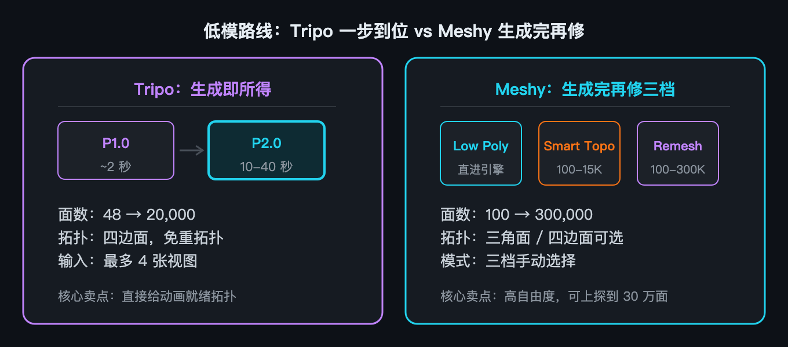
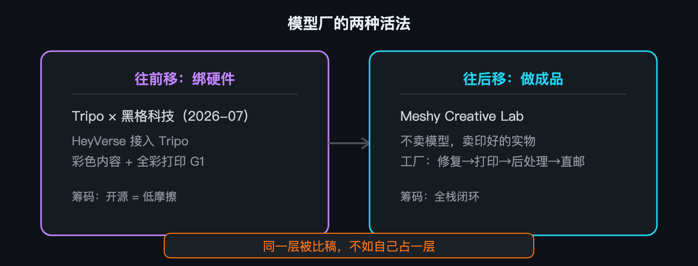

如果你是模型厂
- 你在做的不是"更好的生成"，是"更少的下游工序"
- 你的对手不只是另一家模型厂，还有硬件厂的自研团队
- 开源是你的筹码，但也意味着别人可以分叉你
3D Printing · 1981–2026
过去四十年，3D 打印这个行业一直在解决同一类问题——能不能做出来、买不买得起、好不好用。这三件事基本都解决了。而那个从头到尾没被解决的问题，是打什么。有意思的是，现在接管这件事的，是另一种技术。
你有一台打印机。它能打任何东西。0.1 毫米一层，每秒 500 毫米，十六种颜色一起上。你打开模型网站，往下翻。翻了二十分钟。你关掉了网页。这就是这篇文章要讲的事。
那不是一个关于技术进步的故事。那是一个关于专利和垄断的故事。也是一个四个瓶颈轮流坐庄的故事。但在讲它之前，你得先明白一件事：为什么这东西曾经只有工厂买得起，今天一台入门机只卖一千块人民币。
你想做一个立体的东西。你手上有车床、铣床、刨床、磨床——全是"减材"的活儿：拿一块料，把不要的部分削掉。于是你立刻撞上两堵墙。
第一，内部结构做不了。你想在零件里挖一条弯弯曲曲的冷却通道，刀具伸不进去。第二，越复杂越贵。形状每复杂一分，加工步骤就多一步，钱就多一层。你很自然地想：有没有一种办法，让"复杂"不再等于"贵"？
一个东西不好做，那就把它切成一千片薄的。每一片都很薄，薄到没有内部结构，薄到容易做。做一千片，再粘起来。复杂消失了。因为每一片都是平的，而平面的复杂度和立体的复杂度根本不是一回事。

你给自己这个办法起了个名字，叫快速成型。1981 年 5 月，名古屋市工业研究所的小玉秀男把这件事写成了论文发表。这是人类第一篇关于快速成型的论文。然后没有任何人理他。
1984 年，一个叫 Chuck Hull 的美国人申请了几乎同样的东西——用紫外激光去照一池液态光敏树脂，照到的地方变硬，一层层堆起来。你管这叫光固化（SLA）。1986 年 3 月 11 日，专利授权。
Hull 很快就遇到一个很实际的问题：他的机器要读文件，但当时没有任何一种文件格式能描述一个立体。于是他顺手定义了一个。用一堆三角形拼出任何表面。这个格式叫 STL。
今天你在任何一个 AI 建模网站上点"下载"，得到的还是它，或者它的后代（OBJ、3MF）。顺手发明的东西，往往比主体活得久。
1988 年，第一台商用光固化机 SLA-1 卖了出去。同一年，Scott Crump 想了个更便宜的路子：直接用喷嘴挤熔化的塑料丝——这就是 FDM（熔融沉积）。同年 Carl Deckard 又想了一个：用粉末，激光把粉末烧结起来，就是 SLS。三条路都通了。然后你把它们全锁进了专利里。一台 Stratasys 的桌面机，一万五千美金。你想自己造一台？等着被告。
这二十年里，这三条路的技术其实没有什么大突破。一直被卡的，是谁能造。转折点在 2005 年。英国巴斯大学一个叫 Adrian Bowyer 的人发起了一个项目，叫 RepRap。目标很疯：造一台能打印自己的 3D 打印机——不算螺丝螺母，它身上大约一半的零件，可以由另一台 RepRap 打出来。
2009 年，FDM 的核心专利到期。价格从一万美金掉到了一千美金以下。同年 4 月，MakerBot 的 Cupcake 卖 750 美元。而它的对手，Stratasys 的 uPrint，卖 14,900 美元。专利到期后，Stratasys 只提了一个要求——别用 FDM 这个商标名。于是 Bowyer 造了一个新词：FFF（熔融制丝）。

中国这条线开始得晚，晚了大概七年。1988 年，清华的颜永年建了国内第一个激光快速成形中心。但真正能说明那个年代有多难的，是西安交大的卢秉恒。1994 年，他建研究所，启动资金大约 23 万元人民币。买一台进口设备？想都不用想。那就自己做。
他联合兄弟院校，花 3 万块造了一台激光器。树脂从进口的 2000 元一公斤，硬压到 100 元。1995 年，他拿到 250 万元的攻关资助，做出了中国第一台光固化原型机。1997 年，第一台商品化的机器出来了，售价 150 万人民币——同期的日本设备 48 万美元，美国设备 72 万美元。第一批客户是长安汽车和比亚迪。
你发现没有：一边是"等专利到期，价格自己掉下来"；一边是"没得等，从头自己造"。两条路完全不一样。但它们最后指向的是同一件事——让更多人手上有机器。

到这里，前两个瓶颈都被撬开了。"能不能做出来"和"买不买得起"这两件事，从 2009 年起就不再是问题了。问题变成了：会不会用。而且你会发现，换位到这里还没有完。

便宜是便宜了。但你想打出一个像样的东西，得先学会一堆东西：调平、防翘边、调回抽、算流量、认材料、认温度……出一件废品是常态。机器便宜了，但没有变简单。
2020 年 11 月，一家叫拓竹的公司在深圳成立。创始人陶冶，之前在大疆管消费级无人机。这个出身很重要。做消费级无人机的人，习惯了一件事：把极其复杂的飞控，塞进一个普通人拆开就能飞的东西里。
2022 年 4 月底，X1 正式发布；5 月 31 日，它上了 Kickstarter。它做对的不是某一个参数，而是三件事同时成立：
众筹成绩：5575 个人，5497 万港元（约 4700 万人民币）。外媒当时的形容是：几乎所有厂商都得连夜给自己的机器提速、改定价。
Prusa 是这条赛道上口碑最好的品牌。它的应对是 MK4——但只补了一半。它第一台封闭式 CoreXY 机型（Core One），2024 年 11 月才发布、2025 年 1 月才发货，比 X1C 晚了大约两年半。2026 年 3 月，它裁掉了研发团队近四分之一的人。
其他几家更直接：AnkerMake 停售，BCN3D 破产，Castor 清算。市场分析机构 CONTEXT 给这个现象取了个名字，叫"竹子效应"。
2025 年 1 月，拓竹推了一套"授权与认证保护机制"。意思是：局域网打印、温控、AMS 配置、校准、远程视频、固件升级，都得经过它的 Bambu Connect 授权。后果是，OrcaSlicer 这类第三方切片器被踢出了直接控制。
一个让开源社区反胃的细节： OrcaSlicer 本身，是从拓竹自己按 AGPL 开源的 Bambu Studio 分叉出来的。你开源了，别人基于你的代码做了个东西，然后你把门关了。
拓竹的立场只有一句话："代码的许可证不是访问我们云基础设施的通行证。"2026 年 4 月，事情升级成法律事件：对开发者发 cease-and-desist，Software Freedom Conservancy 认定拓竹违反 AGPLv3。这一行的"墨水盒时刻"到了。
你有了机器。它很快，很准，能打十六种颜色，放在桌上就像一个家电。你打开模型网站。往下翻。你又翻了二十分钟。于是瓶颈第三次换位：从"会不会用"，变成了"打什么"。
你想打一个"坐在南瓜上的猫"。以前的做法：打开 Blender，学三个月，做出来。或者：上模型站找，找到就用，找不到就换个想法。你的想象力被"有没有现成模型"这件事框住了。
2024 年之后，你有了第三个选项：打字。一句话，或者一张图，几秒钟到一分钟，一个网格。但你真的去用的时候会发现：市面上的两家，做法几乎是相反的。
第一家公司叫 Tripo，团队 2023 年 1 月成立。他们干的第一件让人记住的事，是 2024 年 3 月和 Stability AI 一起开源了 TripoSR——单张图片进去，0.5 秒出来一个网格。
后面他们的版本线：
还有一件事值得单独说：他们几乎把所有东西都开源了。 TripoSR、TripoSG、TripoSF、ComfyUI 插件。在这条赛道上，这是目前最大的开源贡献者之一。
第二家公司叫 Meshy，2021 年成立，创始人胡渊鸣。（如果你听说过"太极"这门编程语言，就是他写的。）他们的版本线更整齐：Meshy 1 到 Meshy 7，一步一代。真正的分歧出现在 Meshy 7（2026-08-10）——那一次他们选的方向不是更快，是更准。
具体差多少？两个数就够了：
一家在卖"快"，一家在卖"位置对"。

Meshy 公布过一个数字：盲测胜率 63.8%，赢的是 Tripo 3.1。还有三个对齐分：81.0%、79.7%、59.8%。这些全部是厂商自跑。
第三方评测机构 Crafiq 的 3D Arena（2026-08 数据，社区盲投 ELO）给出的排序是这样的：
| # | 模型 | ELO | 来源 |
|---|---|---|---|
| 1 | Tripo H3.1 | 1790 | VAST |
| 2 | Hunyuan3D 3.1 | 1776 | Tencent |
| 3 | Hi3D v3.0 | 1686 | Math Magic |
| 4 | Rodin 2.5 | 1625 | Hyper3D |
| 5 | Meshy 6 | 1594 | Meshy |
| 6 | Meshy 7 | 1585 | Meshy |
注意两个细节：在这份榜上，排第一的是 Tripo H3.1；而 Meshy 7 不但排在它后面，还排在自家上一代 Meshy 6 后面——不过两边票数都不多，误差棒重叠，别过度解读。
关键信号： 在这条赛道上，"谁更强"目前没有中立裁判。厂商自己的榜单排厂商自己的第一；社区盲投的 ELO 又给了另一份答案。选模型之前先看评测是谁出钱跑的。
第一章里，你遇到了三条路：挤塑料丝（FDM）、照液体（SLA）、烧粉末（SLS）。现在你手上有一个网格，你要把它变成实物。你得选一条。
不过第三条路（SLS，激光烧粉末）至今还锁在工业端——粉末、激光、防爆腔体，哪样都不是放在桌上的东西。所以真正的选择只有两条。
最直接的办法是什么？把塑料加热融化，从一个小孔里挤出来，一层层画上去。跟热熔胶枪没什么本质区别。这就是你在第一章见过的 FDM。
但你的喷嘴有 0.4 毫米粗——这就是问题所在。你的"像素"——你能分辨的最小单位——由喷嘴直径决定。0.4 毫米。你想打一张脸，打出来是一团被圆角化的东西。轮廓是对的，细节全是软的。想细一点？换 0.2 毫米的喷嘴。然后打印时间翻四倍。
你换了个思路。固体线材不好控制，那用液体。你弄一池光敏树脂，用紫外光按层去照它。照到的地方，几秒钟之内变硬。关键差别在这里：你不是一次画一个点，你一次照亮整整一层。

你的"像素"不再是喷嘴，而是屏幕上的一个像素。一块 16K 屏，218 毫米的幅面上一万六千个像素。算一下：13 微米。你和上面那条路，差了大概 30 倍。
它脆。标准树脂摔一下就裂。它得洗。打完出来表面全是未固化的树脂，得用 95% 以上的酒精泡、摇、冲。它得二次固化。洗完还要拿紫外灯再照一遍。
酒精、手套、固化站、废液处理——全是 FDM 那边根本不存在的开销。而真正的成本，就藏在这两步里。
第一个：FDM 的弱点不是"强度"，是"方向"。
同一块 PPA-CF 材料，沿 XY 方向拉伸能到 81.7 MPa。沿 Z 方向——也就是层和层之间——只有 30.2 MPa。掉了六成。因为层与层之间不是长在一起的，是"焊"上去的。所以对 FDM 来说，模型怎么摆，本身就是一个设计变量。同一个模型，横着打和竖着打，强度能差一倍。
第二个：光固化的"大"和"精"，是互斥的。
它的精度吃的是屏幕像素。而屏幕做不大——幅面一大，像素就得变大，精度就掉。所以你会看到一个很别扭的现象：15 寸的大屏机，分辨率写着 8K，听着很唬人，但换算到 XY 上只有 43 微米。而 10 寸的小屏机写着 16K，是 14 微米。差三倍。
第三个：光固化真正贵的地方，是"洗"和"固"。
而且这里有个细节，九成新手会踩：干燥。洗完不能直接照紫外线——表面残留的酒精会被瞬间封在里面，过几天模型就裂了，或者发白。得先用气枪吹干，再静置 15 到 30 分钟。这一步没人当回事，但它决定了你的模型三天后是好的还是裂的。

投 FDM：面数往下压，50 万以下就够（0.4 毫米的喷嘴吃不下更细的）。但必须水密，切片器要靠它判断哪里是实体。壁厚低于 1.2 毫米，直接打不出来。
投光固化：面数反而要留，100 到 150 万，保住表面细节。同样要水密，但更怕悬浮几何——没连上的碎片会在槽里掉下来。大于 40 毫米必须掏空，壁厚 2 毫米，还要至少打一个排液孔，不然里面的残液永远固不了。再加一条：模型要旋转 30 到 45 度，减小大平面的吸力，否则会被拉脱。
到这里，你终于理解了 Tripo 那句"水密模型免修直接切片"到底在说什么。 它说的是 FDM 那条路的痛点。而光固化那条路的痛点，是掏空、排液孔和吸力。两家 AI 公司在同一件事上的着力点，其实取决于它们默认服务的是哪条产线。
前一章你已经看到，AI 几秒钟就能给你一个网格。但你想把它扔进打印机或者游戏引擎的时候，会撞上三堵墙。第一，它没颜色。一个灰不溜秋的模型，要贴图。第二，它的面是乱的。三角面胡乱交织，有的小到离谱，有的拉伸成面条。这种拓扑，动画做不了，细分做不了，渲染也省不了。第三，它不会动。你要让角色走路、挥手、跳舞——就得绑骨、画权重、做动画。这三件事，是网格从"能看"到"能用"之间的三步。
前两步直接卡在打印产线上，这一章讲。第三步（绑骨）离打印最远，是游戏和动画那边的事，留到下一章。
生成的时候，AI 只管形状——它不知道你后面要干嘛。所以它给的拓扑，通常是一堆三角面糊在一起。但你的下游不认这个：动画需要四边面，关节弯曲才不撕裂；游戏引擎需要低面数，不然跑不动；3D 打印需要水密 manifold，不然切片就炸。所以你得重新拓扑。

Tripo：一步到位。
它的 P1.0 约 2 秒出 48 到 20,000 面；P2.0 推到 10 到 40 秒，最多四张视图输入，直接给四边面拓扑——卖点就一个词："免重拓扑"。
Meshy：生成完再修，三档可选。
meshy-t2）：100 到 15,000 面（默认 4,000），干净四边面核心差异：Tripo 帮你做决定，Meshy 让你做决定。前者适合"我想要一个能直接用的模型"，后者适合"我想要不同精度选一个"。
有了干净的网格，下一步是颜色和材质。这里有一个很有意思的现状：贴图对齐的质量，目前没有公开基准。几何上谁对得更好，各家发过分数；但颜色、花纹、材质贴上去准不准——没人比。这意味着：买模型的时候，你实际上是在盲测贴图质量。
回头看这一章，你会发现：AI 解决的只是"有形状"。形状后面的拓扑和贴图——还是得有人做。有的厂商选"往前一步"：把拓扑做到极致，免掉你后面的工序（Tripo）。有的厂商选"往后走一步"：把整条产线做了，从生成到打印到绑骨一条龙（Meshy）。这不只是产品差异。这是在"一个网格到底应该卖多少钱"这件事上的不同判断。
你可能会想：模型厂把东西做好，硬件厂用起来，这不是挺好的合作吗？问题在于——硬件厂不打算把入口交给任何一家。以拓竹为例。它的 MakerWorld，现在同时接了：腾讯混元、Tripo、Meshy、Hi3D、Rodin。五家。
而且拓竹内部的软件团队规模，已经超过了硬件团队。翻成一句话：对模型厂来说，你在这一层是"被比稿的零件"，不是品牌。
反过来看创想三维：走的是自研路线。它的创想云 MakeNow 用腾讯混元打底，自研了九款 AI 工具；设备端的缺陷识别把算法优化周期从 60 天压到 15 天。同一件事，两种完全不同的答案。

往前移：绑硬件。
Tripo 走的是这条。2026 年 7 月和黑格科技战略合作，黑格的全彩内容平台 HeyVerse 接入 Tripo。
往后移：做成品。
Meshy 走的是这条。它搞了个 Creative Lab——不卖模型，卖印好的实物。钥匙扣、冰箱贴、键帽、手办、拼图板。你下个单，合作工厂负责修复、打印、后处理，然后直接寄到你家。
但这目前还是一个极其小众的生意。根据公开信息，Creative Lab 的月订单只有大约 20 单——全部品类加在一起。这意味着绝大多数用户还是把它当"AI 建模工具"用，"一键下单成品"更多是姿态，不是习惯。方向对了，但路还远。
"开源还是闭源"这件事，在这条赛道上传到 2026 年，已经不只是技术偏好了。它变成了监管和信任议题。Prusa 的创始人公开宣布"开源桌面 3D 打印已死"，矛头指向中国的补贴和专利环境；拓竹的固件门被 Software Freedom Conservancy 认定违反 AGPLv3。
在这个语境下：Tripo 的一堆开源资产，是"可验证、低阻力"的故事。而 Meshy 的全闭源，就得更靠产品力和合规叙事来补。同一个技术选择，在不同的环境下值完全不同。
一、"消费级市场份额"有好几个口径，绝对不能混。
三个数说的不是一回事。
二、所有厂商自跑的数字，都要标来源。
三、"合作伙伴"这个词，两家都用得很宽。
从"内置进对方软件"，到"这个客户用过我们的东西"，都算。判断标准只有一个：有没有产品级的集成公告，有没有具体到机型和按钮。
这四十年里，3D 打印爆发过四次。1988 年，第一台商用机卖出去——工艺通了。2009 年，专利到期，价格掉了一个数量级——成本通了。2022 年，一台千元机放到了普通人桌上——门槛通了。2024 年，AI 接管了"打什么"——内容通了。
每一次爆发，都发生在某个瓶颈刚刚被打通的那一年。而第四次和前三不同：它不是造了一台更好的机器。是让机器有东西可打。
现在轮到你了。打开你手边的随便一个东西——一个杯子、一个手机壳、一句话——丢进任意一个 AI 建模网站。等几秒。然后想一下：我拿这个模型，能直接打印吗？还是得修？如果你答不上来，那就说明四十年过去了，这个行业还有很多事没做完。而你正在见证它做完的过程。